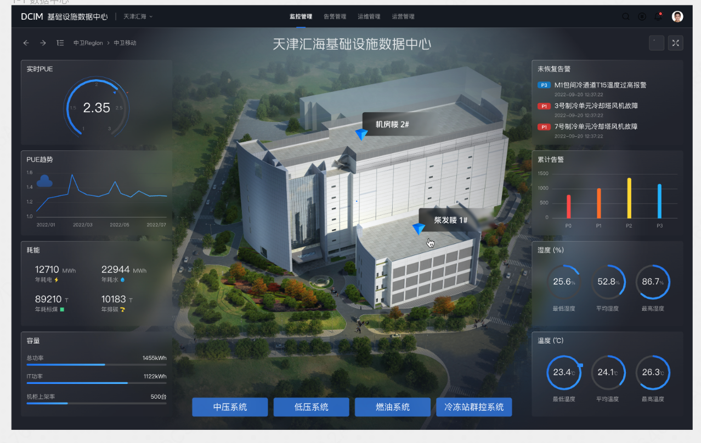
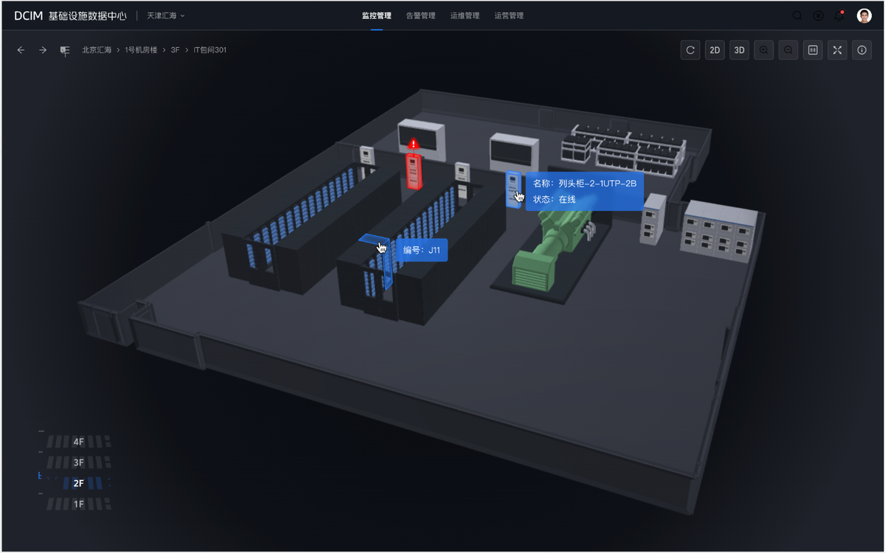
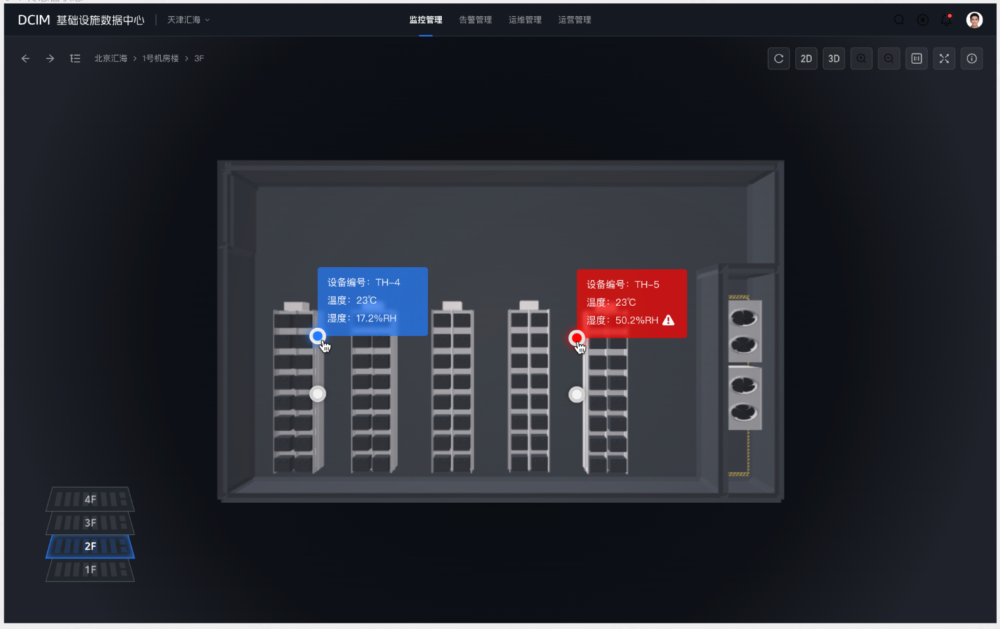
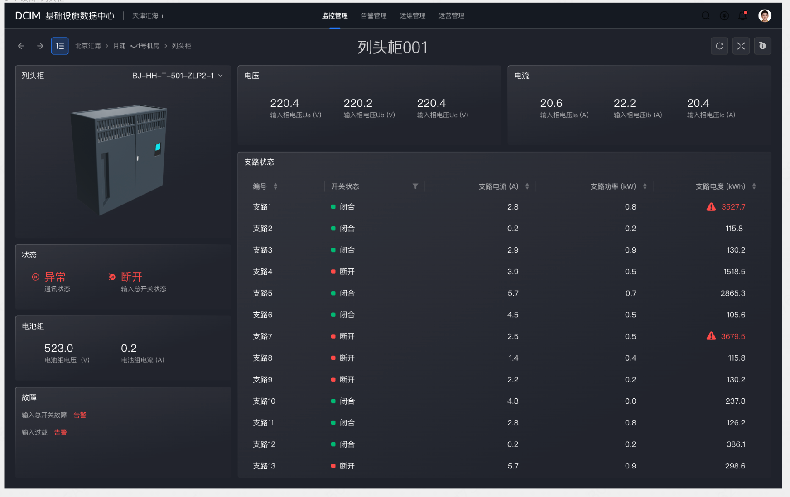
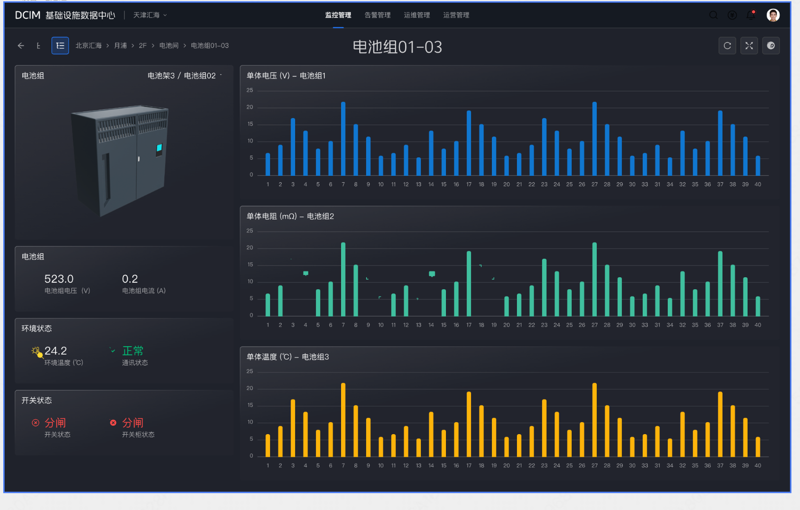
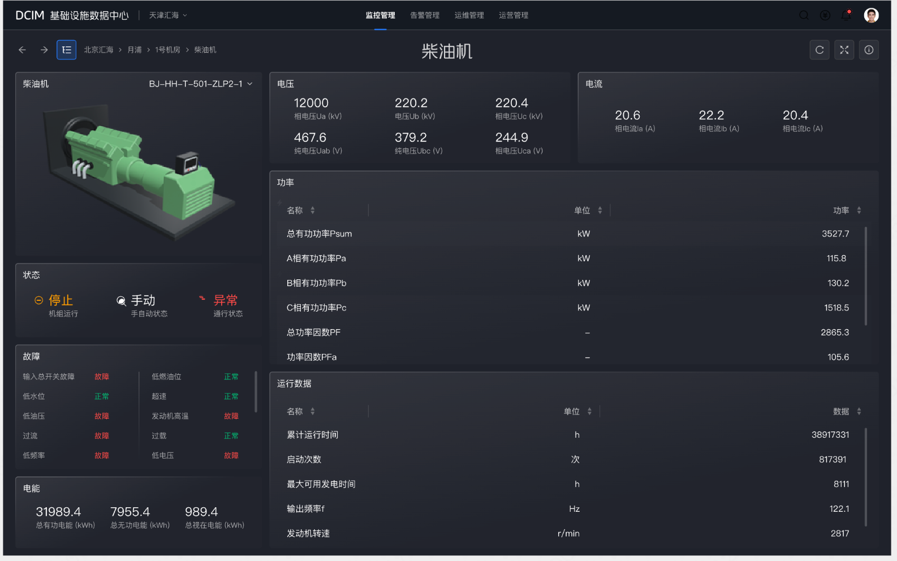

DCIM
数据中心
基础设施线上化管理
深入全国多个 IDC 实体机房进行线下调研，将长期依赖人工巡检的数据中心运维体系全面线上化——构建覆盖告警响应、设备监控、3D 空间漫游的统一运维平台，让故障发现从「小时级」缩短至「分钟级」。
项目没有任何数字化基础可以参考。我们深入天津汇海、北京汇海、上海月浦等实体 IDC，对机房结构、设备布局、传感器接入位置、巡检流程逐一现场记录，将物理世界的运维逻辑「翻译」为系统设计语言。
机房结构与设备清查
逐楼层、逐机房记录设备布局：机柜行列编号、列头柜位置、UPS 间、柴油机房分布，建立完整的物理空间台账，为后续 3D 建模和信息架构提供原始数据。
数据采集点布点规划
调研各类传感器（温湿度、烟感、漏水、电流互感器等）的物理位置与通信协议，规划 IoT 数据接入方案，确保每个监控点都能在系统中精准映射到空间位置。
巡检痛点与响应流程
与一线运维工程师深度访谈，梳理现有故障响应流程：「设备报警 → 电话通知 → 现场确认 → 手工记录」的链路存在大量人工中转节点，是响应滞后的根本原因。
多厂商设备数据统一
数据中心涵盖中压/低压配电、柴油发电机、UPS、冷冻站群控、列头柜等数十类设备，各厂商数据格式迥异。调研阶段完成字段映射与展示规范的统一定义。
故障快速感知与响应
DCIM 最核心的价值不是节能，而是「第一时间发现故障、第一时间定位设备、第一时间通知处理」。系统需要将机房任何异常（温度超限、设备断电、列头柜支路过载等）在秒级内推送给值班人员，并提供精确到设备级别的位置信息，大幅压缩故障响应时间。
7 层空间层级的统一表达
从全国 Region → IDC 园区 → 机房楼 → 楼层 → 机房间 → 机柜区 → 单台设备，空间层级多达 7 层。如何让运维人员在同一套界面中自然地「钻取」到任意深度，同时不迷失方向，是核心交互难题。
实时数据与 3D 空间的融合
3D 模型不能只是装饰，必须承载真实的设备状态数据。当列头柜过载时，3D 场景中对应机柜需高亮报警；当温湿度传感器异常时，需在机房平面图中精确标注位置。数据与空间的实时绑定是最大的技术与设计挑战。
设备清单
传感器布点
设备分类规范
字段标准化
楼栋剖面视图
机房平面/立体
告警展示规范
2D/3D 切换
告警规则配置
传感器协议
持续迭代
新设备接入
每一层均配有 3D 可视化视图与实时数据面板，运维人员可从全局视角快速钻取到具体故障设备。
告警优先设计原则
所有界面层级均以「告警可见性」为第一优先级——未恢复告警始终悬浮展示，3D 场景中故障设备自动红色高亮，确保值班工程师无论在哪一层级操作都不会错过任何异常。
空间 + 数据双视图
每个层级均提供 2D 平面图与 3D 立体视图的自由切换。2D 图适合精确定位设备编号，3D 视图适合感知空间态势。用户可根据操作习惯灵活选择，降低学习成本。


监控管理
全链路实时监控，3D 模型交互下钻，设备状态一览无余
告警管理
P0–P3 分级告警，实时推送，支持告警趋势分析与处理跟踪
运维管理
设备台账、巡检工单、故障处理记录全流程线上化管理
运营管理
PUE 趋势、容量分析、能耗报表，支撑管理层决策
根据故障影响范围和紧迫程度设计四级告警，确保值班人员能快速区分优先级，第一时间处置高危故障。
影响业务连续性
立即响应
设备严重故障
30 分钟内响应
性能异常/预警
2 小时内响应
轻微异常
24 小时内处理






故障感知时间大幅压缩
从人工巡检发现到系统秒级预警
全国分散机房首次实现
统一监控平台覆盖
从园区总览到单台设备
一套界面下钻到底
运维操作全面线上化
历史数据可追溯
高危故障 30 分钟内
必须完成确认处理
设备异常第一时间
推送值班工程师
线上化之前
故障靠值班室电话通报 → 工程师赶到现场确认 → 手写纸质记录 → 逐级电话上报 → 处置完成手工归档。整个链路存在大量人工中转，单次故障响应往往超过 2 小时，且无法追溯历史处置记录。
线上化之后
传感器异常 → 系统秒级推送告警 → 工程师在手机/电脑查看精确位置（精确到哪栋楼哪层哪个机柜） → 携带工具直达故障点 → 系统内完成工单闭环。响应时间压缩到分钟级，全程可追溯。


我在项目中的角色
独立负责从线下调研到系统上线的全链路设计工作。亲赴天津、北京、上海等地 IDC 机房进行现场调研，采集设备布局、传感器分布、运维流程等第一手数据；负责系统整体信息架构设计、七层空间下钻交互逻辑、3D 可视化与数据面板的视觉设计规范，以及告警体系的 P0–P3 分级展示方案。